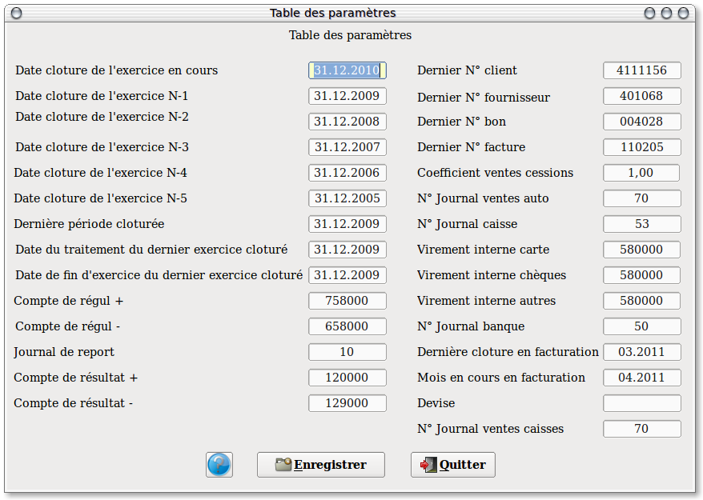

~ Comptabilité Laurux ~

~ Comptabilité Laurux ~ |
|
|
|

Cette table est utilisée pour renseigner diverses données indispensables lors des différents traitements ou saisies. Vous devez l'initialiser lors d'une création de société.
Soyez très prudent dans son utilisation car des saisies erronées ( surtout dans les dates ) peuvent générer des déséquilibres dans votre comptabilité.
Certaines zones sont mises à jour automatiquement par le programme ( Code dernier client & fournisseur crée, toutes les dates, dernier numéro de bon et de facture ) . Ne pas les modifier SVP.
Date dernière période clôturée : Cette date correspond à la date de la dernière clôture mensuelle de la comptabilité. Si votre exercice commence le 01.04.2008 alors cette date sera égale au 31.03.2008. Cette zone sera ensuite mise à jour automatiquement lors de chaque clôture mensuelle en comptabilité.
Date de traitement du dernier exercice clôturé : Cette date doit être comprise dans les deux derniers exercices, donc entre la date de début de l'exercice N-2 et la date de fin d'exercice N-1.
Journal de report : C'est le journal qui servira lors de la clôture annuelle pour la génération des à nouveaux. Il doit être de type "OD"
N’oubliez pas d’enregistrer votre travail avant de quitter le programme.
----------------------------------------------------------------------------------------------------------------------